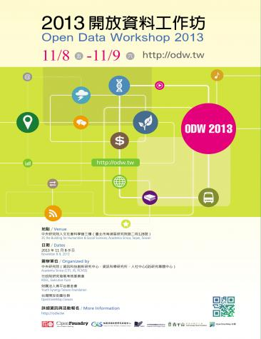

2013 開放資料工作坊 (2013.11.08-09)

◎ 本文原載台灣創用 CC 計畫，原文章連結按此。
日 期：2013.11.08（五）- 2013.11.09（六）
地 點：中央研究院 人文社會科學館 第 1、2 會議室
議程內容：https://odw.tw
報名費用：免費。
報名網址：https://registrano.com/events/odw-sotm-2013（10/28 9：00 開始搶票！）
聯繫信箱：
This e-mail address is being protected from spambots. You need JavaScript enabled to view it

「開放資料」 (Open Data) 是近來眾人關注的議題。研究機構、政府部門、以及民間團體無不希望經由資料的開放使用，以彰顯並發展資料的價值，進而鼓勵協力合作與創新應用。資料的釋出與使用，涉及許多議題，本工作坊將提供一個場合，期望讓各自在民間、政府、學界進行資料開放工作的眾人，能有一個對話與討論的空間。
這次工作坊有些不太一樣的設計。
主軸是「實務與技術」，除了開放資料的原則與政策性討論，我們更希望與會者能在實務與技術面向，包括資料的發布流程、再次使用、協力處理、以及視覺化與相互連接等問題上，進行討論與分享經驗，包括彼此遭遇的困難與限制。此次工作坊安排有專題演講與報告，但主要的議程場次以座談或是講習的形式進行，將預留較多的討論時間，以方便與會者有機會互相交流。
這次工作坊的共同籌辦單位為中央研究院（資訊科技創新研究中心、資訊科學研究所、人文社會科學研究中心地理資訊科學專題研究中心）、行政院研究發展考核委員會、財團法人青平台基金會、以及開放街圖台灣社群。